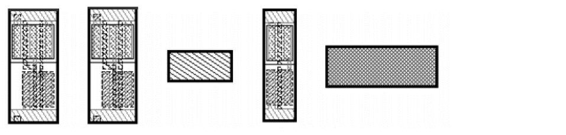
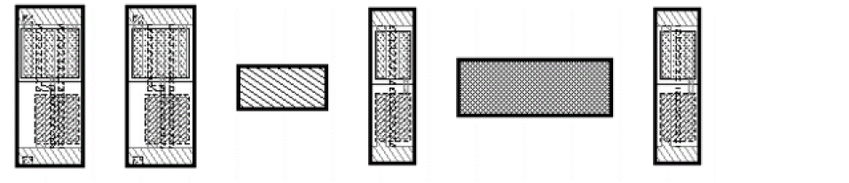

Adding Objects with a Pre-Selected Aligned Group
To add objects with a pre-selected aligned group:
-
On the layout canvas, use
Shift+ click to select the unaligned objects. - Choose Edit – Advanced – Align to open the Align form.
-
Click Set New Reference.
You are prompted to select a reference object for the alignment. -
On the canvas, click at the point to which you want the objects to align.
The unaligned devices align with the original selected alignment group.
Before:
After:

Related Topics
Object Alignment by Using the Align Command
Return to top